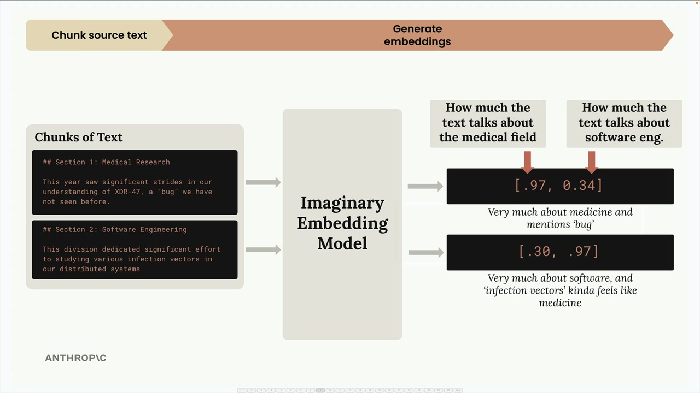
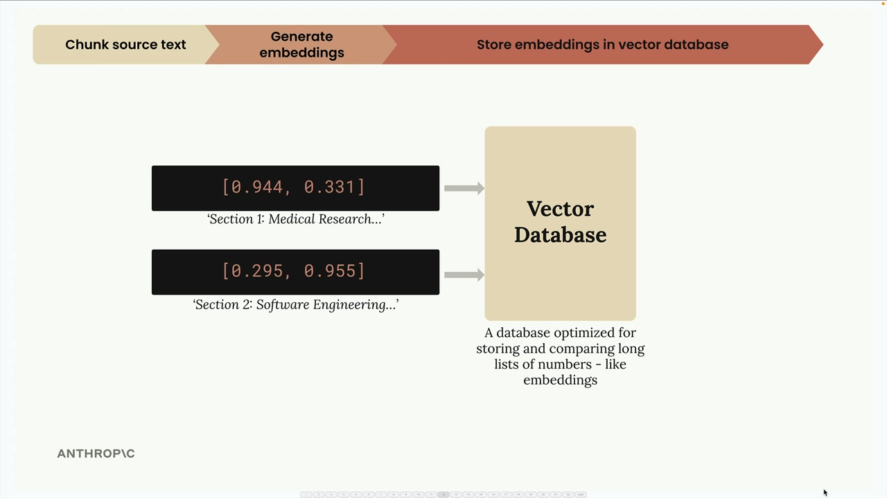
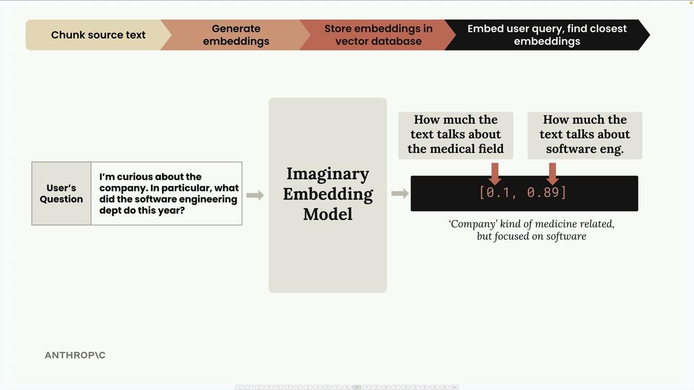
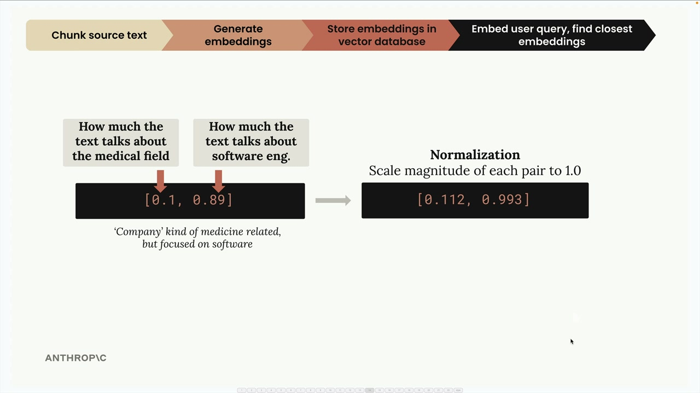
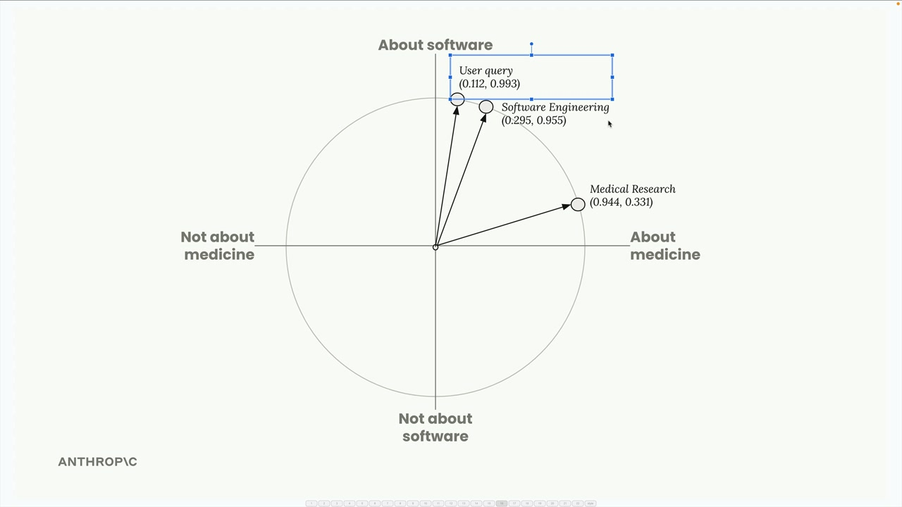
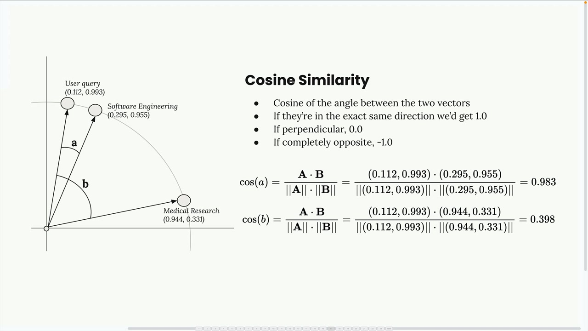
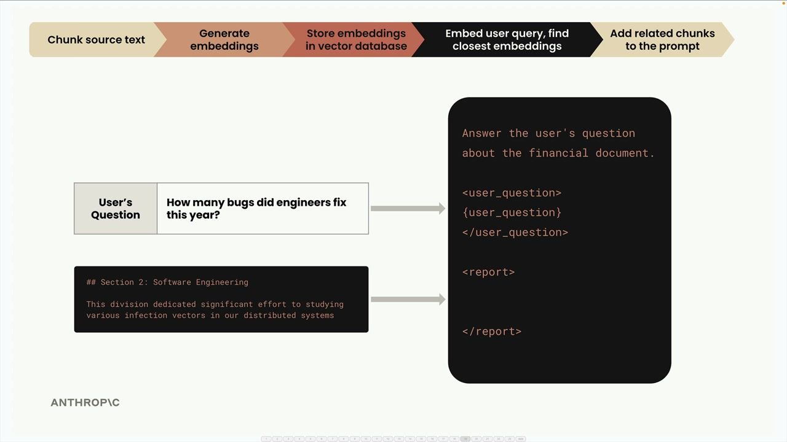

전체 RAG 흐름
RAG의 기본 개념, 텍스트 청킹, 임베딩을 살펴봤으니, 이제 전체 RAG 파이프라인을 단계별로 살펴보겠습니다. 이 예시를 통해 이 모든 요소들이 어떻게 함께 작동하여 관련 정보를 검색하고 응답을 생성하는지 정확히 확인할 수 있습니다.
1단계: 소스 텍스트 청킹
먼저, 소스 문서를 가져와 관리하기 쉬운 청크로 분할합니다. 이 예시에서는 두 개의 간단한 텍스트 섹션을 사용합니다:
- 섹션 1: 의학 연구 - "올해는 이전에 본 적 없는 'bug'인 XDR-47에 대한 우리의 이해에서 상당한 발전이 있었습니다."
- 섹션 2: 소프트웨어 엔지니어링 - "이 부서는 분산 시스템의 다양한 감염 벡터 연구에 상당한 노력을 기울였습니다"
2단계: 임베딩 생성
다음으로, 임베딩 모델을 사용하여 각 텍스트 청크를 수치형 임베딩으로 변환합니다. 이해를 돕기 위해, 항상 정확히 두 개의 숫자를 반환하는 완벽한 임베딩 모델이 있고 각 숫자가 무엇을 나타내는지 알고 있다고 가정해 보겠습니다.

우리의 가상 모델에서:
- 첫 번째 숫자는 텍스트가 의학 분야에 대해 얼마나 많이 이야기하는지를 나타냅니다
- 두 번째 숫자는 텍스트가 소프트웨어 엔지니어링에 대해 얼마나 많이 이야기하는지를 나타냅니다
의학 연구 섹션의 경우 [0.97, 0.34]와 같은 값이 나올 수 있습니다 - 의학 중심이지만 "bug"라는 단어 때문에 소프트웨어 요소도 일부 포함됩니다. 소프트웨어 엔지니어링 섹션의 경우 [0.30, 0.97]을 얻습니다 - 소프트웨어 중심이지만 "infection vectors"에서 의학적 뉘앙스도 있습니다.
정규화
임베딩 API는 일반적으로 각 벡터의 크기를 1.0으로 조정하는 정규화 단계를 수행합니다. 수학적 계산은 신경 쓰지 않아도 됩니다 - 자동으로 처리됩니다. 이를 통해 [0.944, 0.331] 및 [0.295, 0.955]와 같은 정규화된 벡터를 얻습니다.

이 임베딩들을 단위 원 위에 시각화할 수 있으며, 각 점은 텍스트 청크 하나를 나타냅니다.

3단계: 벡터 데이터베이스에 저장
이 임베딩들을 벡터 데이터베이스에 저장합니다 - 임베딩과 같은 긴 숫자 목록을 저장, 비교, 검색하는 데 최적화된 특수 데이터베이스입니다.

이 시점에서 잠시 멈춥니다. 지금까지의 모든 작업은 미리 수행되는 전처리였습니다. 이제 사용자가 쿼리를 제출하기를 기다립니다.
4단계: 사용자 쿼리 처리
사용자가 "회사에 대해 궁금합니다. 특히 소프트웨어 엔지니어링 부서가 올해 무엇을 했나요?"와 같은 질문을 하면, 해당 쿼리를 동일한 임베딩 모델로 처리합니다.

이 쿼리는 [0.1, 0.89]와 같이 임베딩됩니다 - 의학 점수는 낮고 소프트웨어 엔지니어링 점수는 높습니다. 정규화 후 [0.112, 0.993]을 얻습니다.
5단계: 유사한 임베딩 찾기
사용자의 쿼리 임베딩을 벡터 데이터베이스에 보내고 가장 유사한 저장된 임베딩을 찾도록 요청합니다.

데이터베이스는 사용자가 질문한 내용과 가장 가깝게 일치하는 소프트웨어 엔지니어링 섹션을 반환합니다.
유사도 작동 방식: 코사인 유사도
벡터 데이터베이스는 코사인 유사도를 사용하여 어떤 임베딩이 가장 유사한지 결정합니다. 이는 두 벡터 사이의 각도의 코사인을 측정합니다.

코사인 유사도의 핵심 사항:
- 결과값은 -1에서 1 사이입니다
- 1에 가까운 값은 높은 유사도를 의미합니다
- -1에 가까운 값은 매우 다름을 의미합니다
- 0은 수직(관계 없음)을 의미합니다
이 예시에서 사용자 쿼리와 소프트웨어 엔지니어링 청크 사이의 코사인 유사도는 0.983으로 매우 높습니다. 의학 연구 청크와의 유사도는 0.398에 불과하여 훨씬 낮습니다.
코사인 거리
벡터 데이터베이스 문서에서 "코사인 거리"를 자주 볼 수 있습니다. 이는 단순히 (1 - 코사인 유사도)로 계산됩니다. 코사인 거리에서:
- 0에 가까운 값은 높은 유사도를 의미합니다
- 더 큰 값은 낮은 유사도를 의미합니다
이 조정을 통해 많은 맥락에서 숫자를 더 쉽게 해석할 수 있습니다.
6단계: 최종 프롬프트 생성
마지막으로, 사용자의 질문과 찾은 가장 관련성 높은 텍스트 청크를 가져와 프롬프트로 결합하고 Claude에 보내 응답을 받습니다.

The prompt might look like:
Answer the user's question about the financial document.
<user_question>
How many bugs did engineers fix this year?
</user_question>
<report>
## Section 2: Software Engineering
This division dedicated significant effort to studying various infection vectors in our distributed systems
</report>이것이 완전한 RAG 파이프라인입니다! 시스템은 의미적 유사도를 기반으로 가장 관련성 높은 정보를 성공적으로 검색하고 정확한 응답을 생성하기 위한 컨텍스트로 제공했습니다.